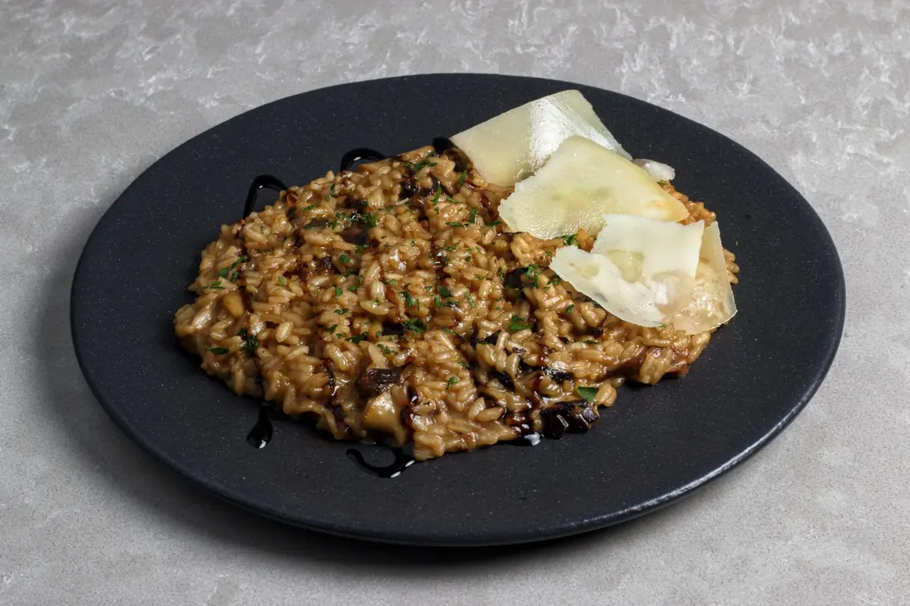
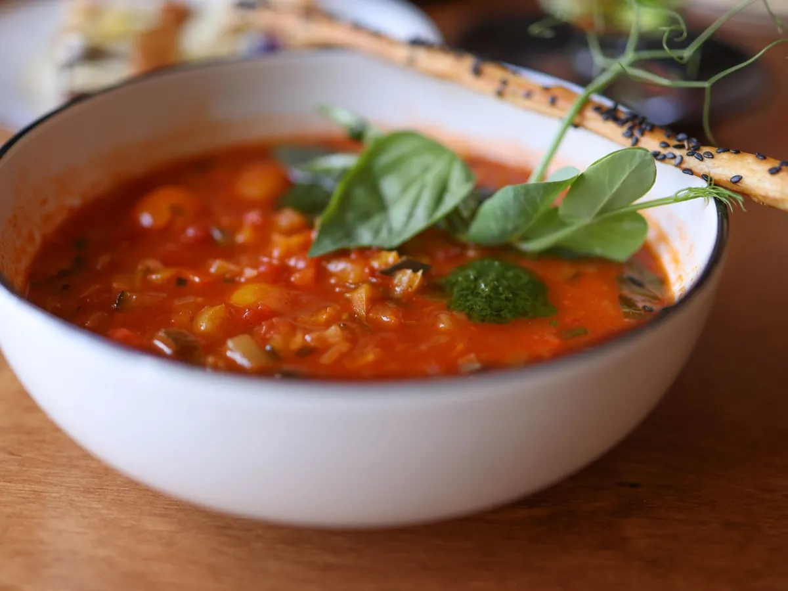
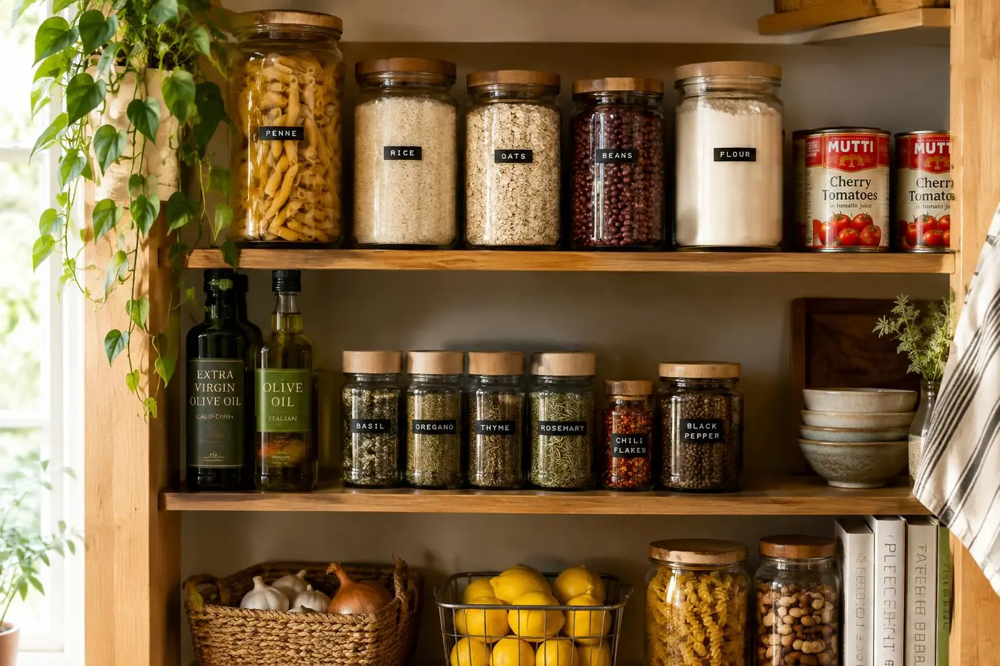
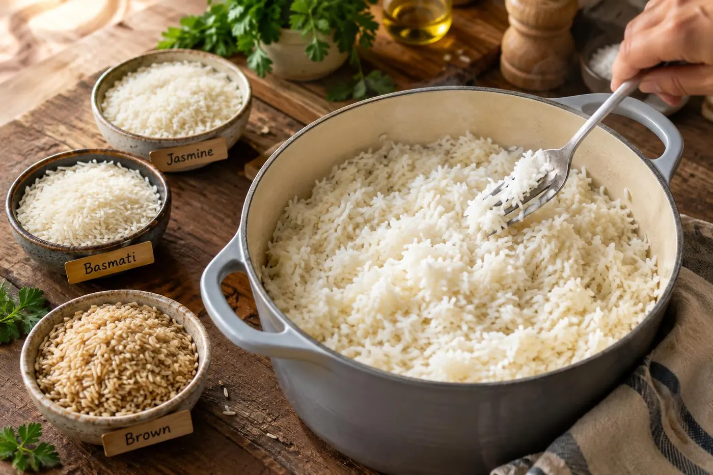
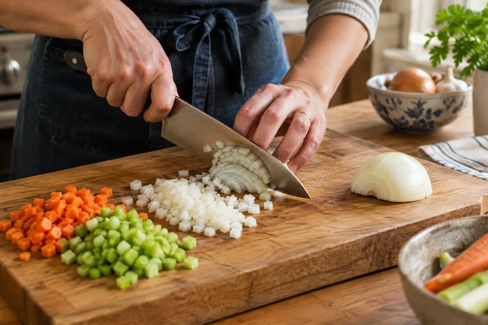

Recipes · Tips · Inspiration
Good food,
every day.
Simple, delicious recipes made for real life: easy enough for a weekday, special enough for the weekend.
Browse by category
From ten-minute breakfasts to weekend baking projects.
Bored of toast?
Good. Start here.
Breakfast deserves better than the same slice every morning. Fluffy pancakes, eggs baked in spicy tomato sauce, oats that make themselves overnight, and yes, avocado toast done properly.
See all breakfast recipesFresh from our kitchen
The newest recipes, tested and ready for yours.
Fluffy Buttermilk Pancakes
Tall, tangy, and properly fluffy.
One-Pan Shakshuka
Eggs, tomato sauce, bread for dunking.
Roasted Butternut Squash Soup
Roasted, silky, and deeply savory.
Sticky Honey Garlic Chicken Thighs
Sticky, garlicky, and ready in 35.
Smashed Avocado Toast with Jammy Eggs
Crisp toast, jammy yolks, bright avocado.

Main DishesVGFCreamy Mushroom Risotto
Earthy, creamy, worth every stir.
Easy Apple Crisp
Jammy apples, crunchy buttery oat topping.
Lemon Chicken Orzo Soup
Bright, lemony chicken soup in one pot.
Fall favorites
Cozy, golden and made for sweater weather.

SoupsVGFCreamy Tomato Basil Soup
Silky, bright, and made from pantry cans.
Roasted Butternut Squash Soup
Roasted, silky, and deeply savory.
Sticky Honey Garlic Chicken Thighs
Sticky, garlicky, and ready in 35.
Creamy Mushroom Risotto
Earthy, creamy, worth every stir.
Creamy Garlic Pasta
Fettuccine tossed in a glossy Parmesan cream sauce built on butter-toasted garlic, done in the time it takes to boil water.
Kitchen basics
Short, practical guides that make every recipe easier.

The Pantry Staples Every Home Cook Needs
A short, realistic list of shelf-stable basics that turn a random Tuesday into a real dinner.
Read the guide →
How to Cook Perfect Rice, Every Time
Simple stovetop methods, reliable ratios, and quick fixes for when rice goes mushy or crunchy.
Read the guide →
Knife Skills 101: Chop Faster and Safer
How to choose, hold, and care for a knife, plus the handful of cuts that make everyday cooking quicker.
Read the guide →Dinner is planned. You're welcome.
Five weeknight dinners, a Sunday prep list and one shopping list for everything.